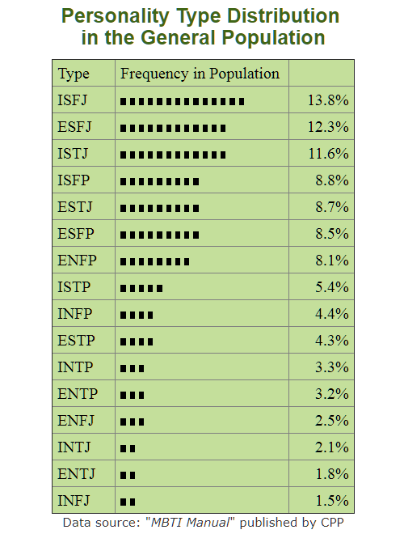

Interested in finding out your MBTI? Login and take the personality quiz!
Keep in mind that personality is just one of many factors that guide our behavior. Our environment, experiences, and individual goals also influence our behavior.
Even if you share a personality type with others, significant differences can still exist among you.
A lot of resources are available to learn how to interpret your MBTI.
16personalities.com has a system with two layers: roles and strategies.
myersbriggs.org discusses how your MBTI can be used in finding careers and improving relationships.
Analysis has been done with MBTIs and other demographics. The amount of research with MBTIs is extensive!
